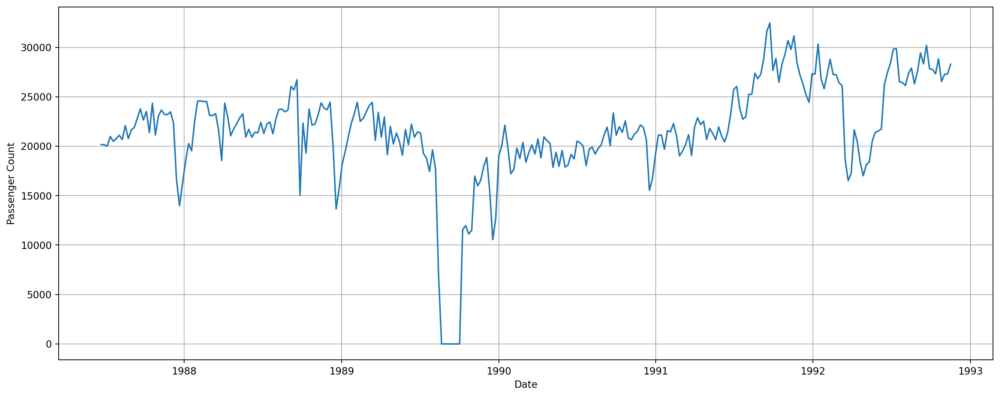
Introduction to Time Series Analysis
Outline
- Time series data
- Statistical models for time series
- Characterising and identifying time series
- Example
1 Time series data
What is a time series?
Time series data can be thought of as data measured at regular intervals of time
Arise in many areas: science, engineering, finance, banking, environment, health
Because we are sampling at adjacent points in time, correlation is introduced
Example: data collected on daily maximum temperatures can be considered as a sequence
Time series data consist of a list of numbers \(\{x_t\}\) and information about the times those numbers were recorded
Visual display of time series
The first step in analysis of time series data is to plot the data!
What to look for:
- linear and nonlinear trends: long-term increase or decrease in the data
- seasonality: when a series is influenced by seasonal factors, e.g., month, day of the week
- cycles/quasi-periodicities: data exhibits rises and falls that are of fixed period
- changes in variability
- irregular fluctuations
Passenger counts for MEL-SYD
Australia beer production
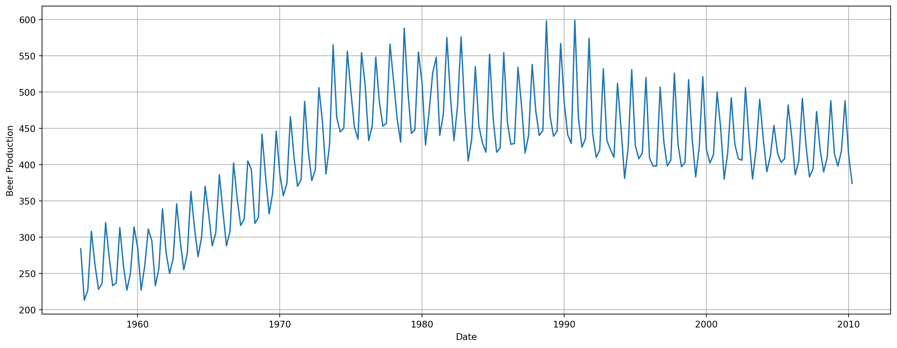
Australian beer production by quarter
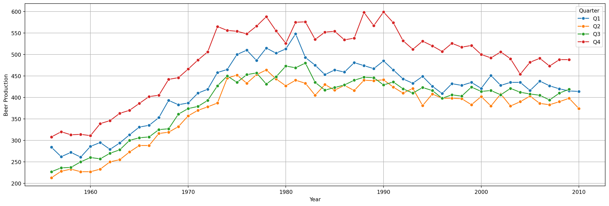
Southern Oscillation Index
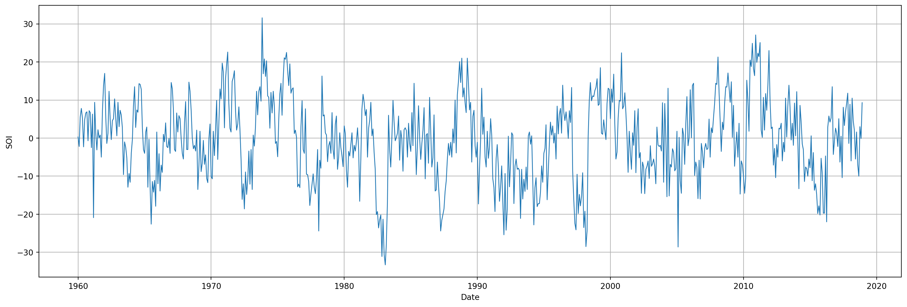
Stock price of NASDAQ company

First differences of stock price

White noise series
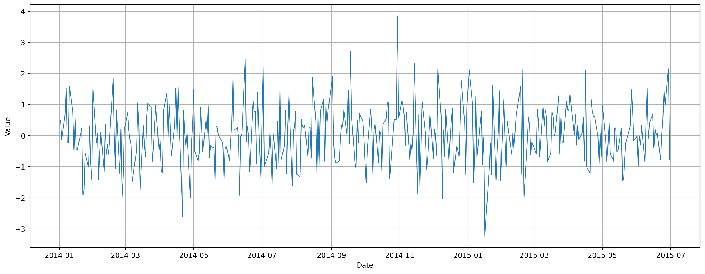
2 Statistical models for time series
Objectives of time series analysis
Description: What is the structure of the series? Is there a trend? Are there seasonalities in the series?
Explanation: Can we use the variation in one time series to explain the variation in another series, as in a time series regression model?
Forecasting: Given an observed time series, can we forecast future values of that series, e.g., can we the SOI for the next year?
Control: What is the impact of changes in one series on the characteristics of another, e.g., impact of monetary policy on unemployment rate?
Correlation in time series
In contrast to the white noise series, all the series we have seen have some kind structure
This structure arises from the fact that adjacent observations are correlated, or observations in different (for example) quarters are correlated
The difference in this correlation structure gives rise to series with different overall structure
Important to understand how this different correlational structure arises
Serial correlation
- Two ways in which correlation can be induced in time series
- Moving average: a moving average series is constructed by averaging observations in seqential time windows of the same width
- Autoregression: in a purely autoregressive series, the current value depends in some way on past values
Autoregressive series
- Here’s an example of a purely autoregressive series: \[ x_t = 0.5 x_{t-1} -0.30 x_{t-2} + \epsilon_t \]
- The current value of the series depends linearly on the past two values of the series, plus some white noise
- AR(2) series
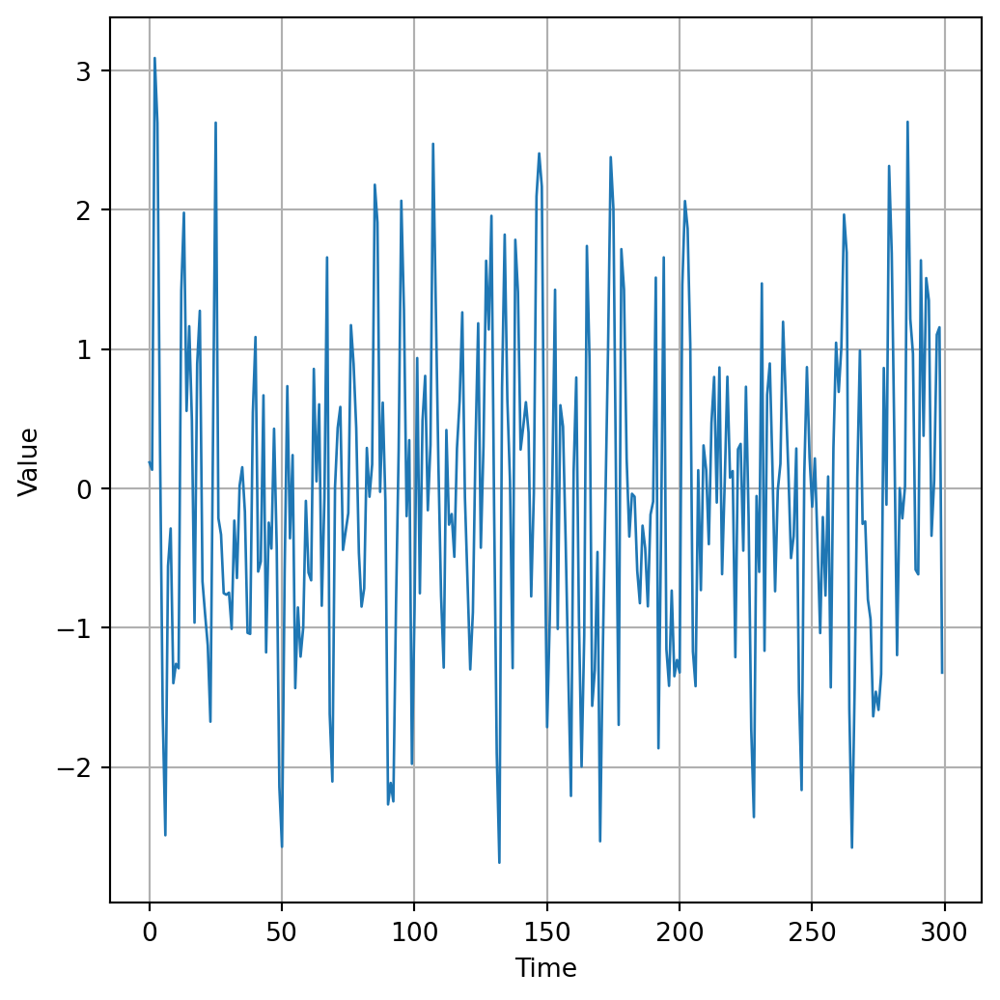
Moving average series
Here’s an example of a purely moving average series: \[ x_t = \epsilon_t + 1.5 \epsilon_{t-1} -0.56 \epsilon_{t-2} \]
The current value of the series is a weighted average of white noise ‘shocks’
MA(2) series
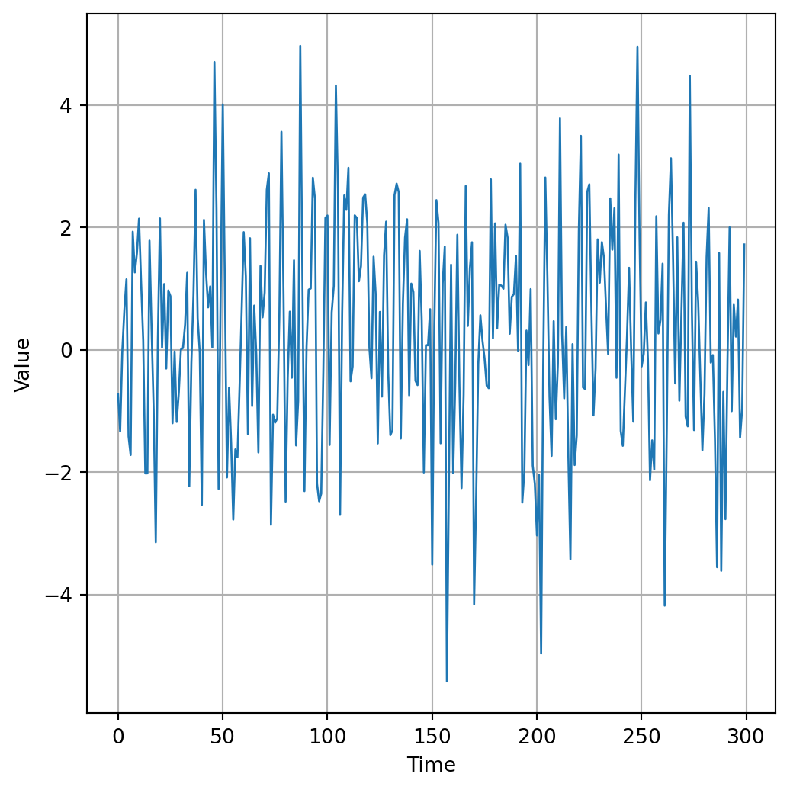
ARMA(2, 2) series
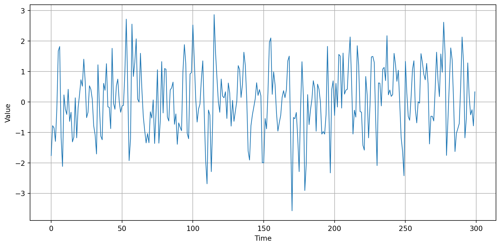
\(X_t = 0.5 X_{t-1} - 0.3 X_{t-2} + \varepsilon_t + 1.5 \varepsilon_{t-1} - 0.56 \varepsilon_{t-2}\)
Stationarity
ARMA modelling of time series data can only be applied for series that are stationary
A stationary series is:
- roughly horizontal (no trends)
- has constant variance
Differencing helps to stabilize the mean (removes some types of trends)
Transformations (such as logarithms) help to stabilize the variance
Identify a nonstationary series by:
- plotting the data!
- examining the autocorrelation function
3 Characterising and identifying time series
Measures of dependence
One of the key steps in analysis of time series is to examine the correlation structure of the series by calculating and displaying autocorrelations and autocorrelations at different lags
Recall that covariance and correlation measure the extent of association between two variables (e.g., \(x\) and \(y\) as in linear regression)
Autocovariance and autocorrelation measure linear relationship between values of a time series \(\{x_t\}\), e.g., between
- \(x_t\) and \(x_{t-1}\)
- \(x_t\) and \(x_{t-2}\)
- \(x_t\) and \(x_{t-3}\)
- \(\ldots\)
Example: autocorrelation in SOI series
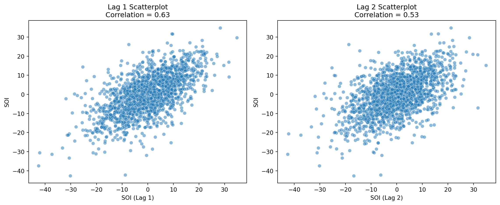
SOI series: autocorrelation function
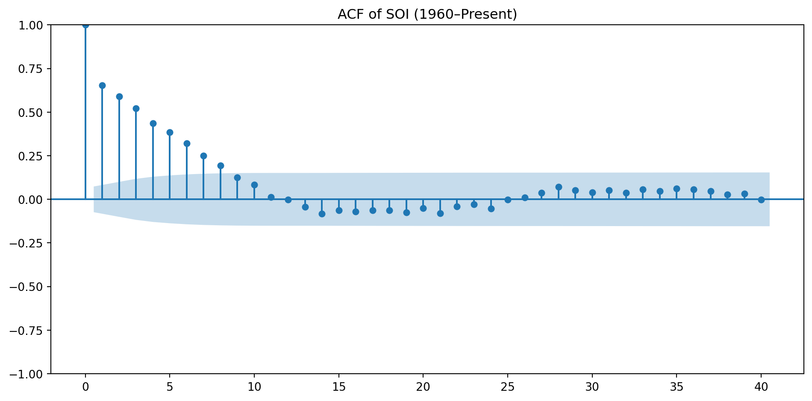
Partial autocorrelations
Correlation between two random variables can sometimes be due to the fact that both variables are correlated with the same third variable
In time series, it could be that the correlation between \(x_t\) and \(x_{t+h}\) is due to the correlation that these variables have with the variables ‘in between’, i.e., \(x_{t+1}, x_{t+1}, \ldots, x_{t+h-1}\)
This gives rise to the notion of a partial autocorrelation, which measures the relationship between \(x_t\) and \(x_{t+h}\) when the effects of the lags in between are removed
SOI series: partial autocorrelations
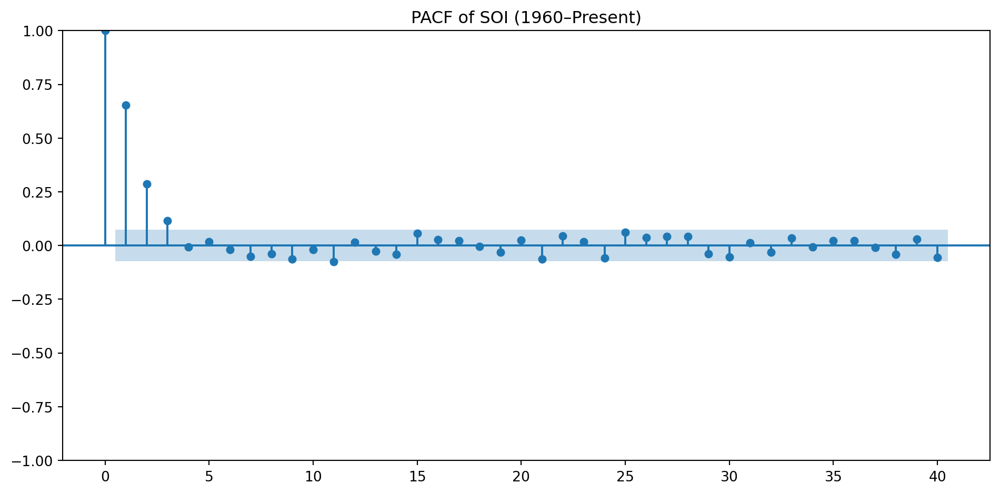
Identifying time series models
The shapes of the ACF and PACF give us a clue as to the structure of a stationary time series
The strategy for identifying the order of an ARMA model would be:
- carry out differencing and or transformation to remove trend and/or nonconstant variance
- calculate and display the ACF and PACF
- interpret the ACF and PACF in order to identify the order of the ARMA(p, q) model
- fit the initial model, check diagnostics, and re-fit if necessary
- produce \(h\)-step ahead forecasts and uncertainty intervals
In contemporary time series analysis, there are now functions to ‘automatically’ select the ‘optimal’ ARMA model from which forecasts can be made
4 Example
Exports from Egypt
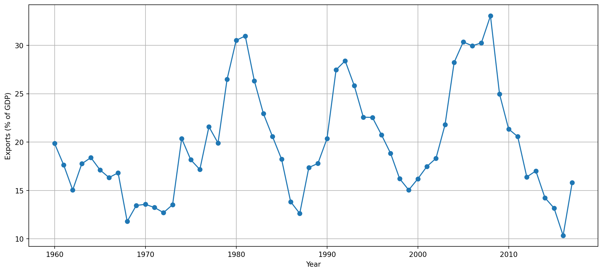
Exports: ACF
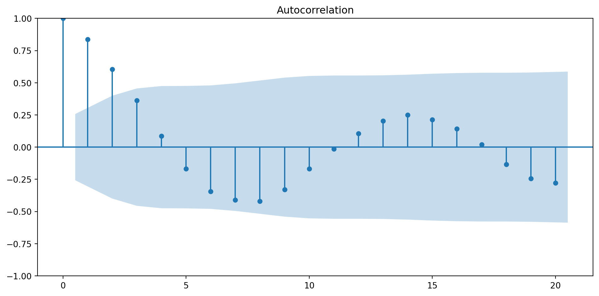
Exports: PACF
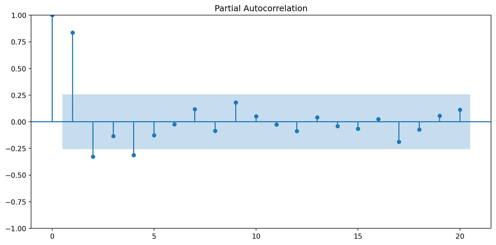
Exports: automatic selection of model
| Dep. Variable: | y | No. Observations: | 58 |
| Model: | ARIMA(2, 0, 1) | Log Likelihood | -141.566 |
| Date: | Thu, 26 Jun 2025 | AIC | 293.132 |
| Time: | 23:52:24 | BIC | 303.434 |
| Sample: | 0 | HQIC | 297.145 |
| - 58 | |||
| Covariance Type: | opg |
| coef | std err | z | P>|z| | [0.025 | 0.975] | |
| const | 20.1790 | 0.972 | 20.766 | 0.000 | 18.274 | 22.084 |
| ar.L1 | 1.6764 | 0.127 | 13.239 | 0.000 | 1.428 | 1.925 |
| ar.L2 | -0.8034 | 0.102 | -7.905 | 0.000 | -1.003 | -0.604 |
| ma.L1 | -0.6896 | 0.193 | -3.573 | 0.000 | -1.068 | -0.311 |
| sigma2 | 7.4910 | 1.546 | 4.844 | 0.000 | 4.460 | 10.522 |
| Ljung-Box (L1) (Q): | 0.03 | Jarque-Bera (JB): | 1.34 |
| Prob(Q): | 0.86 | Prob(JB): | 0.51 |
| Heteroskedasticity (H): | 1.00 | Skew: | 0.35 |
| Prob(H) (two-sided): | 0.99 | Kurtosis: | 2.75 |
Warnings:
[1] Covariance matrix calculated using the outer product of gradients (complex-step).
Exports: comparing data and fit
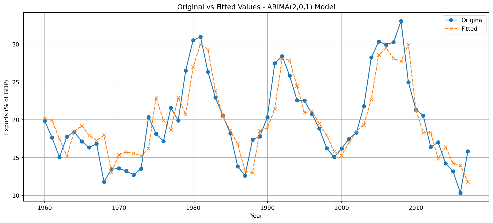
Exports: forecasting for next 10 years
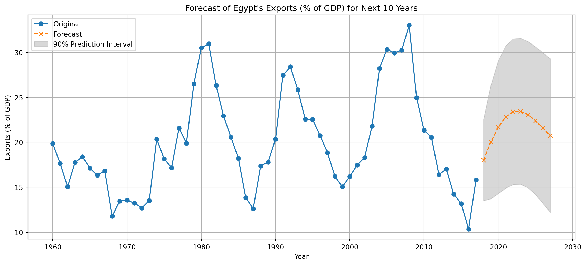
Key points
We have only scratched the surface of time series analysis; there’s much more to be said and learned!
ARMA models can be used to model stationary series; if the series is nonstationary, pre-processing is required, e.g., log transformation to stabilize variance and/or differencing (once, or even twice) to remove linear or quadratic trends
ACF and PACF of stationary series can be used to estimate an initial ARMA model
Even with automated model selection methods, there may be more than one fits just as well and produces similar forecasts
Automated selection methods do not absolve us of the responsibility of carrying out diagnostic checks!

Data Science Transforming Maintenance